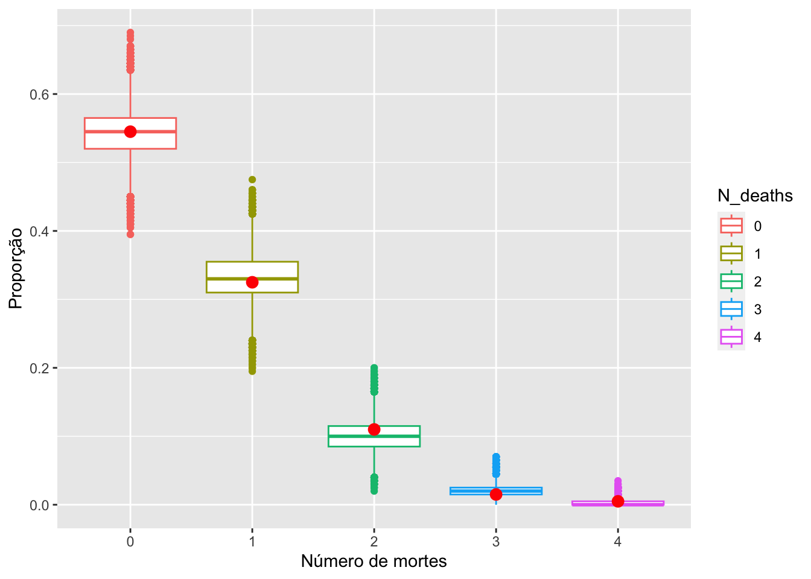

| n_deaths | 0 | 1 | 2 | 3 | 4 |
| frequencia | 109 | 65 | 22 | 3 | 1 |
2 Relatório 2: Número de mortes por coice de cavalo
2.1 Introdução
Em seu famoso livro Lei dos Pequenos Números, Bortkiewicz (1898) mostra como o número de mortes por coice de cavalo se aproxima do modelo Poisson. Os dados originais foram organizados em uma tabela de dupla entrada, com os anos nas linhas (de 1875 a 1894, compreendendo 20 anos) e os batalhões nas colunas (16 ao todo). Os dados que iremos analisar (HorseKicks, do pacote vcd) foram compilados por Fisher (1925), considerando dez batalhões com o mesmo tipo de organização. Cada cela da tabela (batalhão-ano) é considerada uma realização de uma variável aleatória, o que implica em uma amostra de tamanho 200.
2.2 Objetivos
Para este relatóriom os seguintes pontos devem ser realizados.
Mostrar que a priori \(Gama(a,b)\) é conjugada para o modelo \(Poisson(\lambda)\).
Escolher valores razoáveis para a e b de modo a ter uma priori vaga.
Encontrar uma estimativa pontual e intervalar para \(\lambda\)
Realizar uma análise comparando as frequências relativas simuladas a partir da preditiva a posteriori com as frequências da amostra original.
Encontrar a priori de Jeffreys, mostrar que a posteriori é própria e repetir os passos anteriores.
2.3 Desenvolvimento
- Mostrar que a priori \(Gama(a,b)\) é conjugada para o modelo \(Poisson(\lambda)\).
Para isso, provamos que a poisson pertence a família exponencial, onde assume a forma \(L(\lambda) = \frac{1}{\prod{x!}}e^{-\lambda n} e^{\sum{x}log{\lambda}}\). Onde obtemos os membros que compõem a família exponencial:
\[\begin{equation}\label{xx} \begin{split} &h(x)= \frac{1}{\prod{x}}\\ &a(\lambda)=e^{\lambda n}\\ &w(\lambda)=log{\lambda}\\ &T(x)=\sum{x} \end{split} \end{equation}\] Sendo assim provamos que a poisson pertence a família exponencial.
Deixando a verossimilhança apenas em função de \(\lambda\) ficamos com \(L(\lambda) \propto \lambda^{\sum{x_i}}e^{-\lambda{n}}\), essa que por sua vez possui um núcleo semelhante ao da \(\lambda \sim Gama(a,b)\) que é dado abaixo por:
\[f(\lambda) \propto \lambda^{a-1}e^{-b\lambda}\]
Logo provamos que o modelo conjugado da Poisson é a Gama, e que resulta na posteriori: \[\lambda|x \sim Gama(a+ \sum{x_i}, b + n)\]
O \(\sum{x}\) corresponde ao numero de pessoas que vieram a falecer, e o somatório da multiplicação entre a quantidade de ocorrências pelo seu nDeaths é o resultado para a estatística suficiente.
- Escolher valores razoáveis para a e b de modo a ter uma priori vaga.
Os valores escolhidos foram \(a = 0.001\) e \(b = 0.001\).
\(\lambda \sim Gama(a,\ b)\)
Média e variância para a priori:
\[\begin{equation}\label{yy} \begin{split} &E(\lambda)=\frac{a}{b}=\frac{0.001}{0.001}=1\\ &Var(\lambda)=\frac{a}{b^2}=\frac{0.001}{0.001^2}= 1000 \end{split} \end{equation}\]- Encontrar uma estimativa pontual e intervalar para \(\lambda\) a posteriori.
A estimativa pontual para \(\lambda\) é:
\[\begin{equation}\label{zz} \begin{split} &E(\lambda|x)= \frac{\alpha}{\beta}=\frac{a+ \sum{x_i}}{b + n} = \frac{122.001}{200.001} = 0.6100019\\ &Var(\lambda|x)= \frac{\alpha}{\beta^2}=\frac{a+ \sum{x_i}}{{(b + n)}^2} = \frac{122.001}{200.001^2} = 0.003049994 \end{split} \end{equation}\]Intervalo de Credibilidade:
| 2.5% | 97.5% |
|---|---|
| 0.5065702 | 0.7228996 |
- Realizar uma análise comparando as frequências relativas simuladas a partir da preditiva a posteriori com as frequências da amostra original.
Pelo gráfico é possível ver que as frequências relativas registradas pela simulação estão de acordo com as frequências obtidas da amostra original, sendo assim podemos dizer que a poisson é um modelo adequado.
- Encontrar a priori de Jeffreys, mostrar que a posteriori é própria e repetir os passos anteriores. A posteriori encontrada foi
A priori de Jeffreys obtida para a poisson foi: \[f(\lambda)=\lambda^{-1/2}\] Para a posteriori ficamos com:
\[\begin{equation}\label{posteriori_jeffreys} \begin{split} f(\lambda)&=\frac{L(\lambda)f(\lambda)}{f(x)}\\ & \propto L(\lambda)f(\lambda)\\ & = \frac{e^{-\lambda n} \lambda^{\sum{x_i}}}{\prod{x_i}} \lambda^{-\frac{1}{2}}\\ & \propto \lambda^{\sum{x_i} +\frac{1}{2} -1} e^{-\lambda n} \end{split} \end{equation}\]Logo, a partir de uma priori imprópria, obtivemos uma posteriori própria com distribuição \(Gama(\sum{x_i}+0.5, n)\).
Estimativa pontual para \(\lambda\): \[\begin{equation}\label{estimativa_pontual_jeffrey} \begin{split} &E(\lambda|x)= \frac{\alpha}{\beta}=\frac{0.5 + \sum{x_i}}{n} = \frac{122.5}{200} = 0.6125\\ &Var(\lambda|x)= \frac{\alpha}{\beta^2}=\frac{0.5 + \sum{x_i}}{{n}^2} = \frac{122.5}{200^2} = 0.0030625 \end{split} \end{equation}\]
Intervalo de Credibilidade:
| 2.5% | 97.5% |
|---|---|
| 0.5088464 | 0.7256196 |

Novamente é possível ver que o modelo poisson é adequado para os dados.